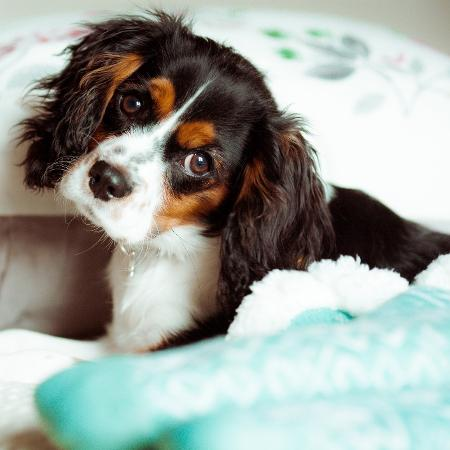
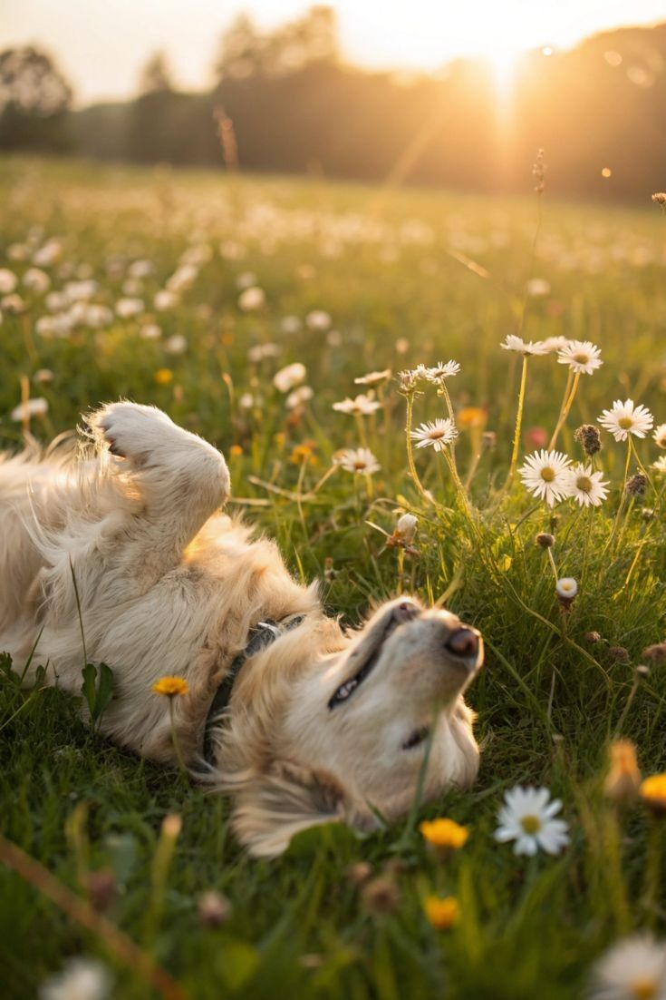

Patas

Cada animal aqui é resgatado com carinho e atenção antes de encontrar seu novo lar.
Processo transparente, com acompanhamento antes, durante e depois da adoção.
Voluntários, protetores e adotantes unidos por uma mesma causa.
Conheça alguns dos animais que estão esperando por uma família. Talvez o seu novo melhor amigo esteja aqui.

São Paulo, SP
Brincalhão, dócil e adora crianças. Vacinado e castrado.

Campinas, SP
Curiosa e carinhosa. Perfeita para apartamento.
.jpg)
Rio de Janeiro, RJ
Filhote cheia de energia, amorosa e brincalhona.
Curitiba, PR
Tranquilo, companheiro e muito carinhoso.
Florianópolis, SC
Muito dócil, brincalhona e adora carinho.
Blumenau, SC
Alegre, brincalhão e cheio de energia.
“Um país pode ser analisado a partir do cuidado aos animais.”

Quando você adota, oferece mais do que um lar: oferece segurança, carinho e uma segunda chance para quem precisa de você.
O Conectando Patas é uma plataforma digital colaborativa criada para auxiliar no resgate, acolhimento e adoção responsável de animais abandonados.
A iniciativa busca conectar voluntários, protetores e adotantes, facilitando a divulgação de informações e tornando mais eficiente o apoio aos animais em situação de abandono.
Por meio da tecnologia, buscamos fortalecer a colaboração entre a comunidade e incentivar a conscientização sobre posse responsável, contribuindo para o bem-estar animal e oferecendo uma nova oportunidade para aqueles que precisam de um lar.